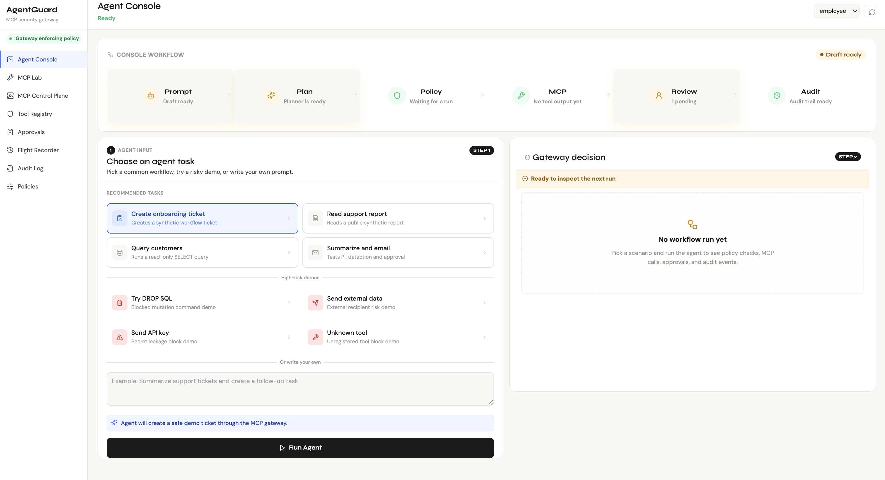
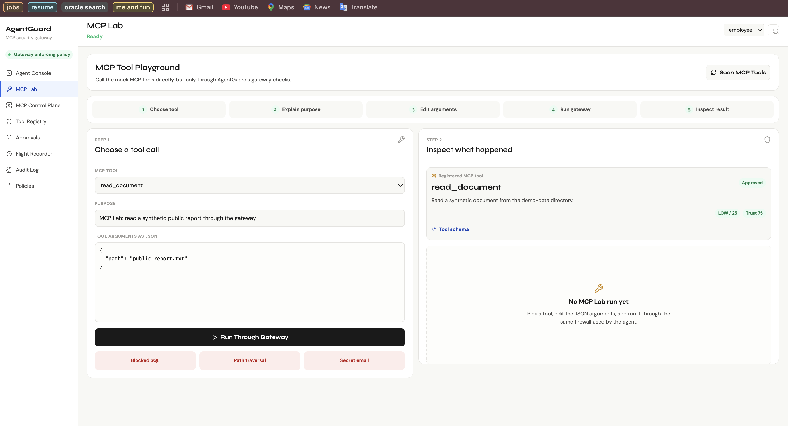
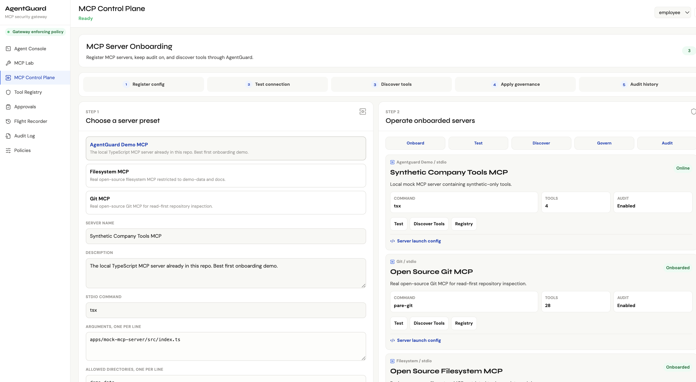
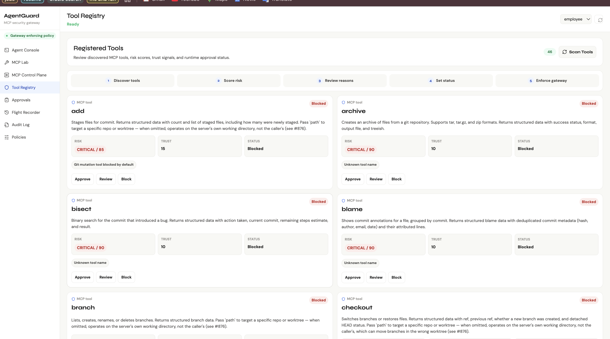
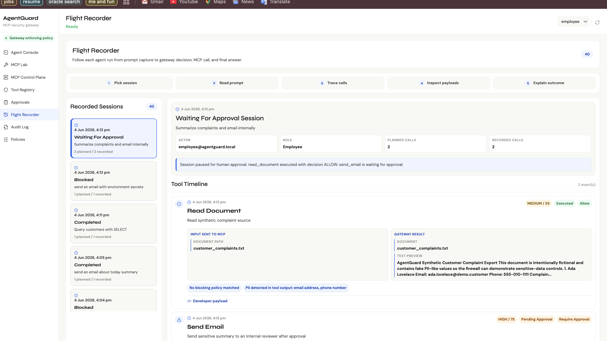
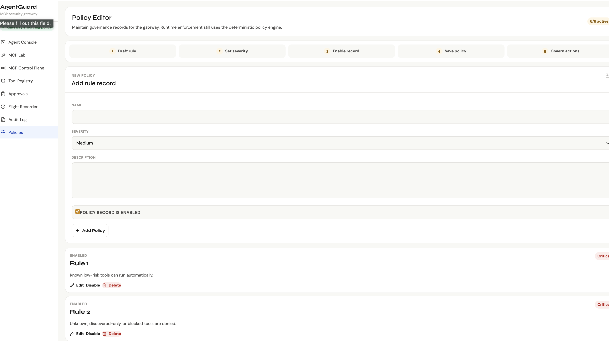

Two roles
Software developer depth with electronics and embedded systems range.
Software Developer
Cloud, full-stack, and AI agent systems
I work on backend APIs, React interfaces, test automation, distributed workflows, and security-heavy agent products where observability and policy enforcement matter.
React
Node.js
OCI
Kafka
MCP
Electronics / Embedded Systems
Edge inference, hardware control, and robotics
I also build at the hardware-software boundary, connecting computer vision pipelines to embedded mobility controls and validating real-time behavior on constrained devices.
NVIDIA DeepStream
CUDA
YOLOv8
JetBot
C++
Selected work
Projects built across product software and embedded AI.
01
MCP Security Gateway
AgentGuard
A full-stack prototype that secures AI agents using MCP tools through runtime policy checks, risk scoring, human approval, and tamper-evident audit trails.
- Scans tool metadata before use and enforces policy on every call.
- Blocks PII leakage, secrets, SQL mutation, path traversal, and external-recipient risk.
- Ships Agent Console, MCP Lab, Control Plane, Tool Registry, Flight Recorder, and Policy Editor views.
- Stores agent sessions and decisions in a SQLite flight recorder with an audit hash chain.
React
Node.js
TypeScript MCP SDK
Prisma
Socket.IO
View repository






02
Collaborative Project Management
OneForAll
A Jira-style workspace for team execution with ticket stages, priorities, invite-code onboarding, real-time chat, and AI summaries for reducing task-thread context switching.
- Built with Node.js, Express, MongoDB, React, and Socket.IO.
- Uses Groq LLaMA 3 to convert task threads and chat history into action-item digests.
- Hardens auth with RBAC, bcrypt, audit logging, and Redis-backed JWT blacklist expiry.
React
Express
MongoDB
Redis
Groq API
03
Embedded AI + Robotics
JetBot Autonomous Buggy
Edge robotics work connecting a Dockerized NVIDIA DeepStream vision pipeline with JetBot mobility controls for low-latency autonomous behavior on embedded hardware.
- Achieved 30+ FPS real-time detection on embedded hardware across 100 YOLOv8 classes.
- Optimized CUDA kernel parameters for low-latency edge inference in a Dockerized DeepStream setup.
- Reduced navigation response to a single inference cycle by integrating the C++ detection pipeline with mobility controls.
- Documented the hardware-software interface and validated autonomous behavior under test conditions.
NVIDIA DeepStream
CUDA
YOLOv8
JetBot
C++
Docker
04
Log Infrastructure
Distributed Log Aggregator
A Rust project exploring distributed, fault-tolerant, strongly consistent event-log design.
Rust
Distributed systems
Event logs
View repository
05
AI + Computer Vision
AI Surveillance
A JavaScript-based experimentation repo around AI-assisted monitoring workflows and visual automation.
JavaScript
AI
Automation
View repository
Internship experience
Production work across cloud, frontend, APIs, Kafka, and dashboards.
Jan 2026 - Present
Software Development Engineer Intern - ICON
Oracle Cloud Infrastructure
- Designed and shipped a GenAI agent for OpenAPI spec authoring across 5+ OCI microservice endpoints.
- Built a reusable React customer input drawer with conditional SKU logic across service configurations.
- Expanded Playwright and Cypress coverage from 60% to 90% for distributed UI regression safety.
Jun 2025 - Aug 2025
Software Development Engineer Intern
Freight Tiger
- Reduced bulk-upload onboarding API response time by 40% through a single primary-field lookup path.
- Implemented idempotency keys across 8 endpoints to eliminate duplicate microservice transactions.
- Resolved Kafka data-loss failures and built PostgreSQL-backed KPI reporting to save 5+ hours each week.
Stack
Tools I use to move from prototype to reliable system.
Java
Python
C++
JavaScript
TypeScript
SQL
React
Node.js
Express
Socket.IO
Prisma
Kafka
Redis
OCI
Docker
ArgoCD
PostgreSQL
MongoDB
Elasticsearch
Playwright
Cypress
Power BI
MCP
RAG
NVIDIA DeepStream
CUDA
YOLOv8
JetBot
Embedded Linux
Proof points
Academic and competitive signals.
B.Tech in Computer and Electronics Engineering at Thapar Institute of Engineering and Technology.
Merit-based scholarship for outstanding academic performance at the top of the cohort.
Microsoft Learn Student Chapter Hackathon among 300+ participants.
Certificates
Verified credentials across software testing and electronics fundamentals.
LinkedIn Learning
End-to-End JavaScript Testing with Cypress.io
Completed Mar 03, 2026. Covered Cypress.io and JavaScript testing workflows.
View proof{kind=link}
ELC Activity
HDL Implementation of Digital Clock
Completed Oct 27, 2025. Certificate ID: LmPSwor4hY.
View proofELC Activity
DC Power Supply Design
Completed Dec 20, 2023. Certificate ID: ASHAQrXLyo.
View proofELC Activity
PCB Fabrication
Completed Oct 16, 2023. Certificate ID: bffAsC99Qq.
View proofELC Activity
PCB Design
Completed Mar 03, 2023. Certificate ID: PAjtRGe1ye.
View proofAbout
I like systems that make complicated work feel controlled.
I am a Computer and Electronics Engineering student at Thapar Institute of Engineering and Technology, currently working as an SDE intern with Oracle Cloud Infrastructure. My work sits between product engineering, backend reliability, frontend quality, and applied AI.
The projects I care about most are the ones where the interface is only the surface: behind it there is access control, auditability, latency work, test coverage, and a clear operating model.
I am open to new ideas and I am usually searching for the next useful thing to build, especially when it turns an unclear problem into a working product or system.
focusagentic workflows with runtime controls
learningdistributed systems and cloud reliability
embeddedlow-latency robotics and edge inference
buildingnew ideas into production-grade demos